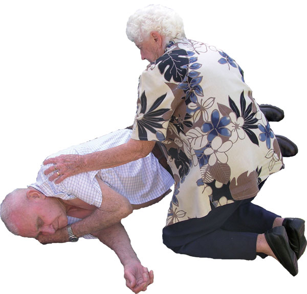
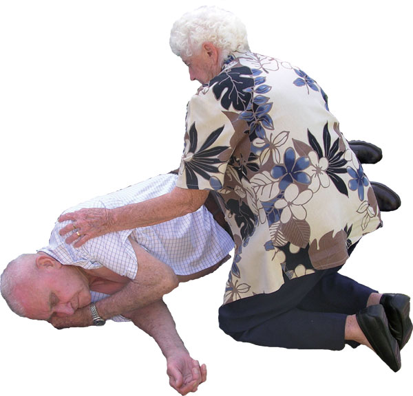

The Unconscious Casualty
The Unconscious Casualty
When breathing has been restored, it is essential to maintain the airway and ensure that the tongue, fluids or other objects do not cause an obstruction. It is also important to reduce the risk of inhalation of stomach contents.
Any unconscious casualty who remains on their back risks an obstructed airway by solids or fluid, or by having their upper airway blocked by a relaxed tongue.
The most effective way of controlling this problem is to put the unconscious breathing casualty in a position that ensures the airway remains open by draining away any vomitus, or by allowing the relaxed tongue to move away from the airway opening. This position is called the recovery position.
This position places the casualty on their side, with the head down and tilted in such a way which expels any fluid onto the ground, and the tongue falls clear of the airway opening.

To prevent distress to the foetus, place women in advanced pregnancy on the left side unless prevented by injuries.
Procedure for placing a casualty in the recovery position
 prepare the casualty by checking pockets and removing items such as keys, and spectacles
prepare the casualty by checking pockets and removing items such as keys, and spectacles
 kneel beside the casualty and make sure that both their legs are straight
kneel beside the casualty and make sure that both their legs are straight
 place the arm nearest to you out at right angles (90˚) to the body
place the arm nearest to you out at right angles (90˚) to the body
 bring the farthest arm from you across the chest, and place the back of the hand under the casualty's cheek
bring the farthest arm from you across the chest, and place the back of the hand under the casualty's cheek
 using your other hand, grasp the farthest leg just above the knee and pull it up, ensuring the foot stays on the ground
using your other hand, grasp the farthest leg just above the knee and pull it up, ensuring the foot stays on the ground
 keeping the hand under the casualty's cheek, pull the leg towards you to roll the casualty onto their side
keeping the hand under the casualty's cheek, pull the leg towards you to roll the casualty onto their side
 adjust the upper leg so that both the hip and knee are bent at right angles
adjust the upper leg so that both the hip and knee are bent at right angles
 tilt the head back to make sure the airway remains open
tilt the head back to make sure the airway remains open
 adjust the hand under the cheek to keep the head tilted
adjust the hand under the cheek to keep the head tilted
 check the casualty's breathing regularly
check the casualty's breathing regularly
 If the casualty is to remain in the recovery position for any more than 30 minutes, turn them over to the other side if injuries permit.
If the casualty is to remain in the recovery position for any more than 30 minutes, turn them over to the other side if injuries permit.